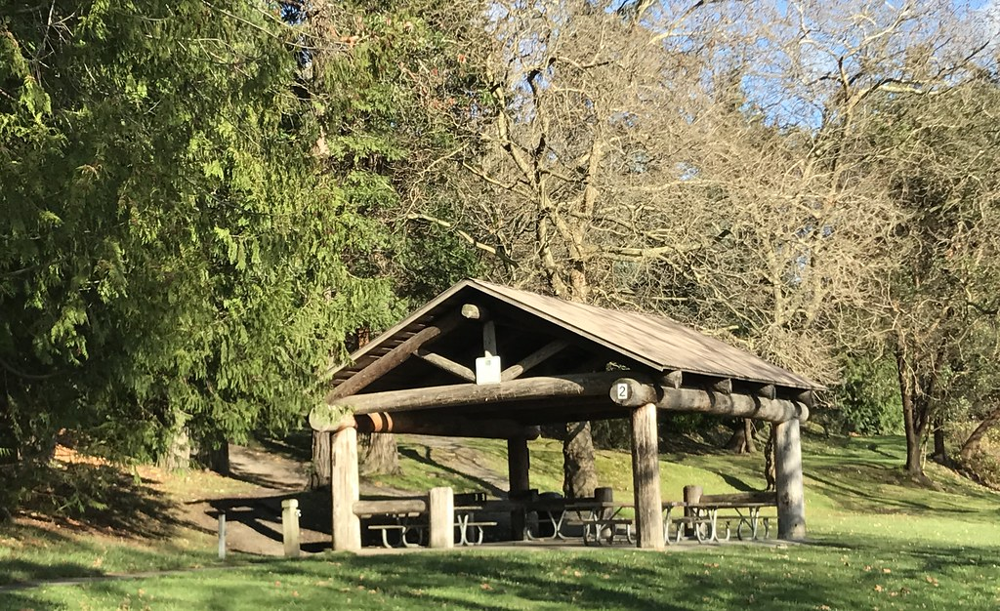

| Common name of Fauna | Class | Family | Source |
|---|---|---|---|
| Dunlin | Aves | Scolopacidae | Inaturalist.org |
| Horned Grebe | Aves | Podicipedidae | Inaturalist.org |
| Merlin | Aves | Falconidae | Inaturalist.org |
| Killdeer | Aves | Charadriidae | Inaturalist.org |
| Trumpeter Swan | Aves | Antidae | Inaturalist.org |
| Ring-Necked Duck | Aves | Anatidae | Inaturalist.org |
| Hooded Merganser | Aves | Anatidae | Inaturalist.org |
| Brewer's Blackbird | Aves | Icteridae | Inaturalist.org |
| Silver-Haired Bat | Mammalia | Vespertilionidae | Inaturalist.org |
| Pacific Yew | Pinopsida | Taxaceae | Inaturalist.org |
| Oregon Ash | Magnoliopsida | Oleaceae | Inaturalist.org |
| Western White Pine | Pinopsida | Pinaceae | Inaturalist.org |
| Horse-Chestnut | Magnoliopsida | Sapindaceae | Inaturalist.org |